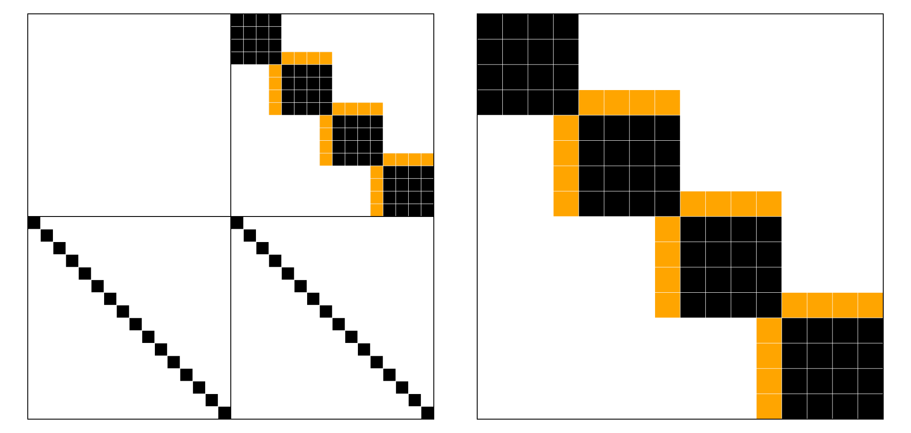

Sparse Jacobian evaluation for implicit semidiscretizations
HydroTrixi.jl can supply a known residual Jacobian sparsity pattern to OrdinaryDiffEq.jl. The time-integration algorithm's autodiff setting determines how the Jacobian entries are computed. The default AutoFiniteDiff() setting uses graph-coloured finite differences when a sparse prototype is available. We select the sparse path when constructing the ODE problem and request the compatible KLU-based default algorithm as follows:
ode = semidiscretize(semi, tspan; jacobian = SparseJacobian())
algorithm = default_algorithm(semi, SparseJacobian())DefaultJacobian() supplies no Jacobian information. With adaptive mesh refinement, HydroTrixi.jl rebuilds the prototype and associated Rosenbrock solver state whenever the mesh topology changes.
Let $\boldsymbol{u}_{\mathrm{state}}\in\mathbb{R}^m$ denote the state variables supplied to the spatial operator $\boldsymbol{\mathcal{R}}(\boldsymbol{u}_{\mathrm{state}},t)$, and let $\boldsymbol{u}_{\mathrm{evolved}}$ denote the variables advanced by the differential part of the temporal formulation. Define the spatial-operator Jacobian sparsity by
\[\boldsymbol{S} = \operatorname{pattern}\left( \frac{\partial\boldsymbol{\mathcal{R}}} {\partial\boldsymbol{u}_{\mathrm{state}}}\right).\]
The standard and capacity operators store one vector that plays both state and evolved roles. Their physical-residual Jacobian sparsities are, respectively,
\[\boldsymbol{J}_{\mathrm{physical}}^{\mathrm{standard}} = \boldsymbol{S}, \qquad \boldsymbol{J}_{\mathrm{physical}}^{\mathrm{capacity}} = \boldsymbol{S}\mathbin{\cup}\boldsymbol{I}_m.\]
The capacity identity accounts for differentiating the nodal capacity factor. For the supported LDG pattern, this identity is already contained in the dense element-local blocks, but HydroTrixi.jl adds it structurally.
The constitutive operator instead stores distinct blocks in the order $\boldsymbol{y}_{\mathrm{physical}} = (\boldsymbol{u}_{\mathrm{evolved}},\boldsymbol{u}_{\mathrm{state}})^\mathrm{T}$. If $\boldsymbol{\vartheta}$ is a nodal constitutive map, its physical residual and sparsity are
\[\boldsymbol{\mathcal{F}}_{\mathrm{physical}} = \begin{bmatrix} \boldsymbol{\mathcal{R}}(\boldsymbol{u}_{\mathrm{state}},t) \\ \boldsymbol{u}_{\mathrm{evolved}} - \boldsymbol{\vartheta}(\boldsymbol{u}_{\mathrm{state}}) \end{bmatrix}, \qquad \boldsymbol{J}_{\mathrm{physical}} = \begin{bmatrix} \boldsymbol{0} & \boldsymbol{S} \\ \boldsymbol{I}_m & \boldsymbol{I}_m \end{bmatrix}.\]
For the mixed Richards formulation, $\boldsymbol{u}_{\mathrm{evolved}}=\boldsymbol{\Theta}$ is water content, and $\boldsymbol{u}_{\mathrm{state}}=\boldsymbol{\Psi}$ is pressure head. For the pressure-head form, the pressure head vector plays both roles.
With PassiveVariablesBoundaryFlux1D(), the augmented state is $\boldsymbol{y}=(\boldsymbol{y}_{\mathrm{physical}},\boldsymbol{q})^\mathrm{T}$. The two passive residual rows depend on every node in the adjacent boundary element, while the passive columns are zero. Writing this two-row boundary pattern as $\boldsymbol{B}$ gives
\[\boldsymbol{J}_{\mathrm{augmented}} = \begin{bmatrix} \boldsymbol{J}_{\mathrm{physical}} & \boldsymbol{0} \\ \boldsymbol{B} & \boldsymbol{0} \end{bmatrix}.\]
jac_prototype is a numerical sparse matrix containing stored zeros at the augmented residual coordinates. It excludes entries arising only from the temporal mass matrix $\boldsymbol{A}$. OrdinaryDiffEq adds those entries when it constructs the Rosenbrock matrix $\boldsymbol{A}-\gamma\Delta t_n\boldsymbol{J}_n$.
We now construct and visualize the constitutive pattern for a small mixed Richards problem with $K=4$ elements and polynomial degree $N=3$, following examples/elixir_richards_manufactured_solution.jl.
using CairoMakie
using HydroTrixi
using SparseArrays
using Trixi
asset_dir = docs_generated_dir("richards_jacobian_sparsity")
problem = HydrologicProblemRichardsManufacturedSolution(tspan = (0.0, 1.0))
mesh = TreeMesh(problem.domain...; initial_refinement_level = 2, n_cells_max = 100,
periodicity = false)
solver = DGSEM(polydeg = 3, surface_flux = flux_central)
semi = SemidiscretizationImplicit(mesh, problem, solver;
solver_parabolic = ParabolicFormulationLocalDG(),
form = MixedForm(),
passive_variables = NoPassiveVariables())
ode = semidiscretize(semi, problem.tspan; jacobian = SparseJacobian());For this one-dimensional mixed Richards discretization, the residual prototype has $K(N+1)^2 + 2(N+1)(K-1) + 2K(N+1)$ stored entries. The first term contains dense element-local entries of $\partial_{\boldsymbol{\Psi}}\boldsymbol{\mathcal{R}}$, the second term contains LDG interface entries, and the final term contains the two constitutive identity diagonals. We verify the prototype size, number of stored entries, and stored values:
mesh, equations, solver, cache = Trixi.mesh_equations_solver_cache(semi.semi_base)
n_nodes = Trixi.nnodes(solver)
n_elements = Trixi.nelements(solver, cache)
n_interfaces = length(Trixi.eachinterface(solver, cache))
n_state_dofs = n_nodes * n_elements
expected_nonzeros = n_elements * n_nodes^2 + 2 * n_nodes * n_interfaces +
2 * n_state_dofs
jac_prototype = ode.f.jac_prototype
@assert size(jac_prototype) == (2 * n_state_dofs, 2 * n_state_dofs)
@assert nnz(jac_prototype) == expected_nonzeros
@assert all(iszero, nonzeros(jac_prototype))Next, we visualize the residual Jacobian sparsity.
interface_sparsity = spzeros(Bool, 2 * n_state_dofs, 2 * n_state_dofs)
physical_indices = LinearIndices((n_nodes, n_elements))
for interface in Trixi.eachinterface(solver, cache)
left_element = cache.interfaces.neighbor_ids[1, interface]
right_element = cache.interfaces.neighbor_ids[2, interface]
left_face_dof = physical_indices[n_nodes, left_element]
for right_node in Trixi.eachnode(solver)
right_dof = physical_indices[right_node, right_element]
interface_sparsity[left_face_dof, n_state_dofs + right_dof] = true
interface_sparsity[right_dof, n_state_dofs + left_face_dof] = true
end
end
figure = Figure(size = (1050, 500))
jacobian_axis = Axis(figure[1, 1]; aspect = DataAspect(), yreversed = true)
spatial_axis = Axis(figure[1, 2]; aspect = DataAspect(), yreversed = true)
hidedecorations!(jacobian_axis)
hidedecorations!(spatial_axis)
spy!(jacobian_axis, transpose(jac_prototype); color = :black)
spy!(jacobian_axis, transpose(interface_sparsity); color = :orange)
spy!(spatial_axis,
transpose(jac_prototype[1:n_state_dofs,
(n_state_dofs + 1):(2 * n_state_dofs)]); color = :black)
spy!(spatial_axis,
transpose(interface_sparsity[1:n_state_dofs,
(n_state_dofs + 1):(2 * n_state_dofs)]);
color = :orange)
vlines!(jacobian_axis, 1:(2 * n_state_dofs - 1); color = :white, linewidth = 0.5)
hlines!(jacobian_axis, 1:(2 * n_state_dofs - 1); color = :white, linewidth = 0.5)
vlines!(spatial_axis, 1:(n_state_dofs - 1); color = :white, linewidth = 0.5)
hlines!(spatial_axis, 1:(n_state_dofs - 1); color = :white, linewidth = 0.5)
vlines!(jacobian_axis, n_state_dofs; color = :black, linewidth = 1)
hlines!(jacobian_axis, n_state_dofs; color = :black, linewidth = 1)
figure_path = joinpath(asset_dir, "pattern.png")
save(figure_path, figure; px_per_unit = 2)
println("Saved sparse Jacobian pattern with $(nnz(jac_prototype)) entries to " *
figure_path)Saved sparse Jacobian pattern with 120 entries to /home/runner/work/HydroTrixi.jl/HydroTrixi.jl/docs/src/assets/generated/richards_jacobian_sparsity/pattern.png
In the figure below, the physical-residual Jacobian sparsity is shown on the left, and the spatial-operator Jacobian sparsity $\partial_{\boldsymbol{\Psi}}\boldsymbol{\mathcal{R}}(\boldsymbol{\Psi},t)$ is shown on the right. The orange entries show dependencies across element interfaces introduced by the LDG fluxes.
